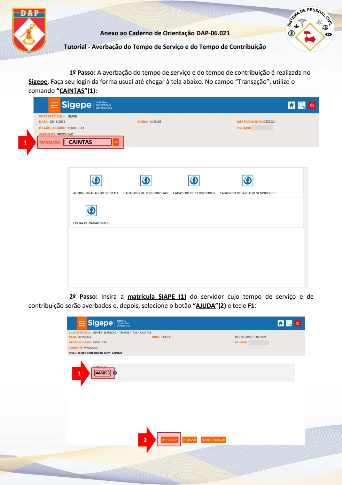
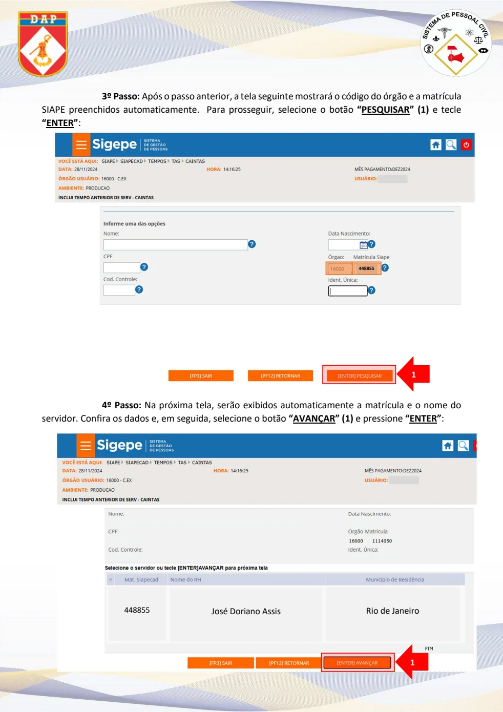
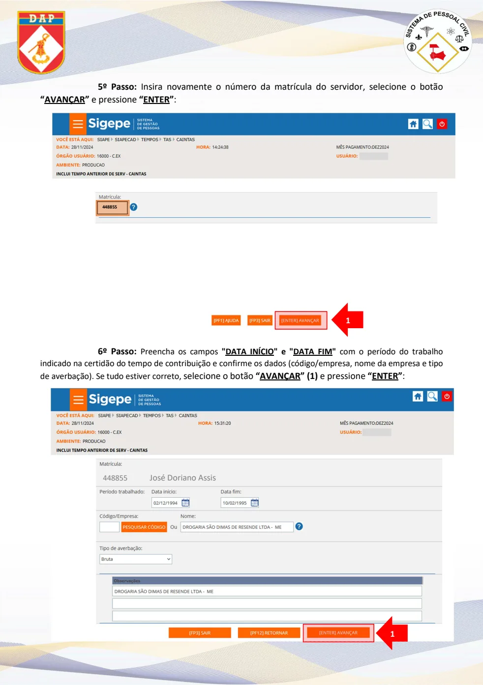
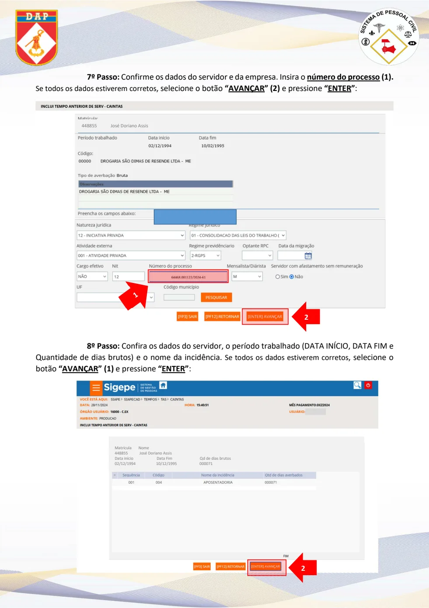
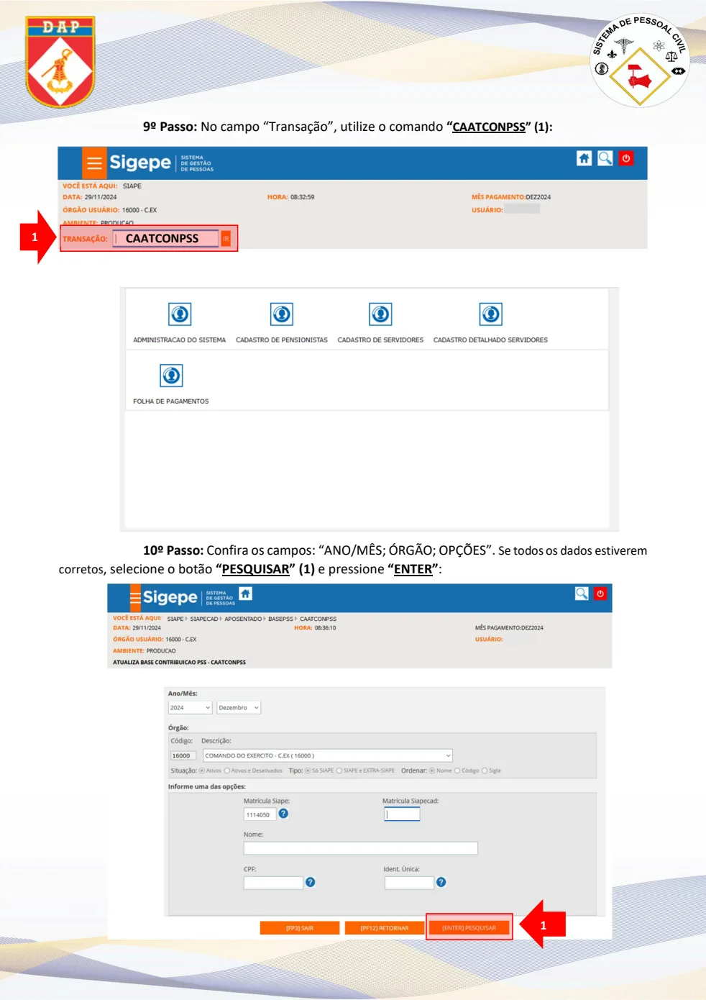
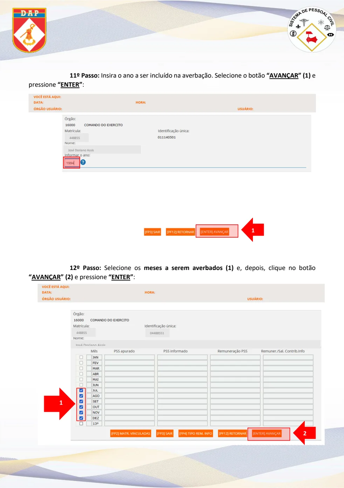
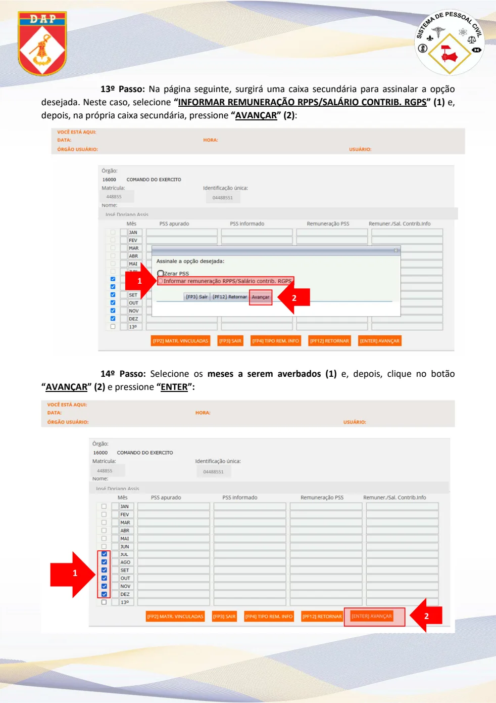
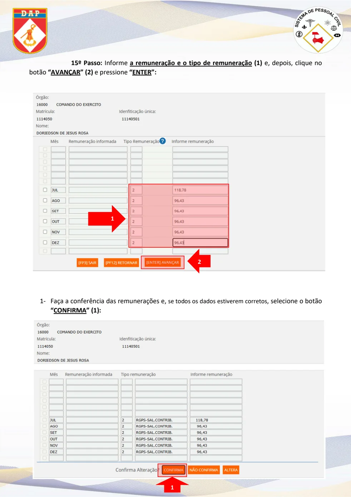
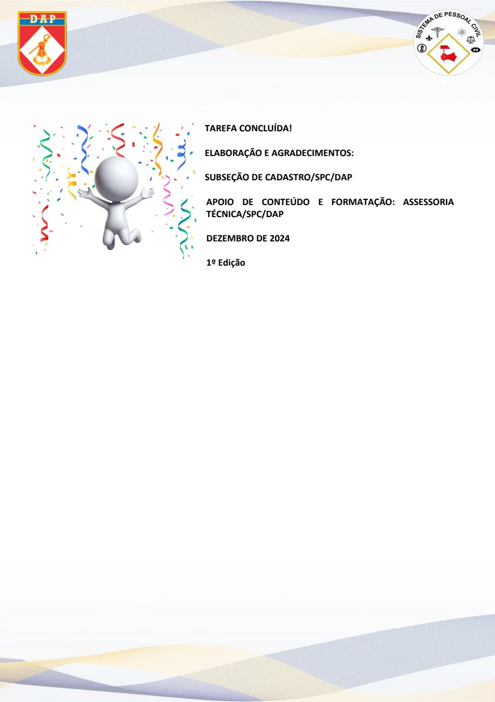

Texto extraído da edição fornecida, sem atualização normativa. Consulte a página original para conferir tabelas, formulários e instruções ilustradas. A numeração dos links corresponde à página do arquivo PDF.
Acesso e matrícula — passos 1 e 2
PDF · p. 1Anexo ao Caderno de Orientação DAP-06.021
Tutorial - Averbação do Tempo de Serviço e do Tempo de Contribuição
1º Passo: A averbação do tempo de serviço e do tempo de contribuição é realizada no
Sigepe. Faça seu login da forma usual até chegar à tela abaixo. No campo “Transação”, utilize o
comando “CAINTAS”(1):
2º Passo: Insira a matrícula SIAPE (1) do servidor cujo tempo de serviço e de
contribuição serão averbados e, depois, selecione o botão “AJUDA”(2) e tecle F1 :
1
CAINTAS
448855 1
2
Ver página original — tabelas, imagens e diagramas

Órgão e dados — passos 3 e 4
PDF · p. 23º Passo: Após o passo anterior, a tela seguinte mostrará o código do órgão e a matrícula
SIAPE preenchidos automaticamente. Para prosseguir , selecione o botão “PESQUISAR” (1) e tecle
“ENTER”:
4º Passo: Na próxima tela, serão exibidos automaticamente a matrícula e o nome do
servidor. Confira os dados e, em seguida, selecione o botão “AVANÇAR” (1) e pressione “ENTER”:
1
448855
448855
José Doriano Assis
Rio de Janeiro
1
Ver página original — tabelas, imagens e diagramas

Período — passos 5 e 6
PDF · p. 35º Passo: Insira novamente o número da matrícula do servidor , selecione o botão
“AVANÇAR” e pressione “ENTER”:
6º Passo:
Preencha os campos "DATA INÍCIO" e "DATA FIM" com o período do trabalho
indicado na certidão do tempo de contribuição e confirme os dados (código/empresa, nome da empresa e tipo
de averbação). Se tudo estiver correto, selecione o botão “AVANÇAR” (1) e pressione “ENTER”:
1
448855
448855 José Doriano Assis
1
Ver página original — tabelas, imagens e diagramas

Processo e conferência — passos 7 e 8
PDF · p. 47º Passo: Confirme os dados do servidor e da empresa. Insira o número do processo (1).
Se todos os dados estiverem corretos , selecione o botão “AVANÇAR” (2) e pressione “ENTER”:
8º Passo: Confira os dados do servidor, o período trabalhado (DATA INÍCIO, DATA FIM e
Quantidade de dias brutos) e o nome da incidência.
Se todos os dados estiverem corretos , selecione o
botão “AVANÇAR” (1) e pressione “ENTER”:
448855 José Doriano Assis
64468.001122/2024 -61
2
Matrícula Nome
448855 José Doriano Assis
Data início Data Fim Qd de dias brutos
02/12/1994 10/12/1995 000071
2
Ver página original — tabelas, imagens e diagramas

Contribuições — passos 9 e 10
PDF · p. 59º Passo: No campo “Transação”, utilize o comando “
CAATCONPSS” (1):
10º Passo: Confira os campos: “ANO/MÊS; ÓRGÃO; OPÇÕES”.
Se todos os dados estiverem
corretos , selecione o botão “PESQUISAR” (1) e pressione “ENTER”:
1
CAATCONPSS
1
Ver página original — tabelas, imagens e diagramas

Ano e meses — passos 11 e 12
PDF · p. 611º Passo: Insira o ano a ser incluído na averbação. Selecione o botão “AVANÇAR” (1) e
pressione “ENTER”:
12º Passo: Selecione os meses a serem averbados (1) e, depois, clique no botão
“AVANÇAR” (2) e pressione “ENTER”:
José Doriano Assis
448855
1
José Doriano Assis
448855 0448855 1
2
1
Ver página original — tabelas, imagens e diagramas

Remuneração — passos 13 e 14
PDF · p. 713º Passo: Na página seguinte, surgirá uma caixa secundária p ara assinalar a opção
desejada. Neste caso, selecione “INFORMAR REMUNERAÇÃO RPPS/SALÁRIO CONTRIB. RGPS” ( 1) e,
depois, na própria caixa secundária, pressione “AVANÇAR” (2) :
14º Passo: Selecione os meses a serem averbados (1) e, depois, clique no botão
“AVANÇAR” (2) e pressione “ENTER”:
José Doriano Assis
448855 0448855 1
1
2
José Doriano Assis
448855 0448855 1
2
1
Ver página original — tabelas, imagens e diagramas

Conferência final
PDF · p. 815º Passo: Informe a remuneração e o tipo de remuneração (1) e, depois, clique no
botão “AVANÇAR” (2) e pressione “ENTER”:
1-
Faça a conferência das remunerações e, se todos os dados estiverem corretos , selecione o botão
“CONFIRMA” (1):
1
2
1
Ver página original — tabelas, imagens e diagramas

Elaboração
PDF · p. 9TAREFA CONCLUÍDA!
ELABORAÇÃO E AGRADECIMENTOS:
SUBSEÇÃO DE CADASTRO/SPC/DAP
APOIO DE CONTEÚDO E FORMATAÇÃO: ASSESSORIA
TÉCNICA/SPC/DAP
DEZEMBRO DE 2024
1º Edição
Ver página original — tabelas, imagens e diagramas
